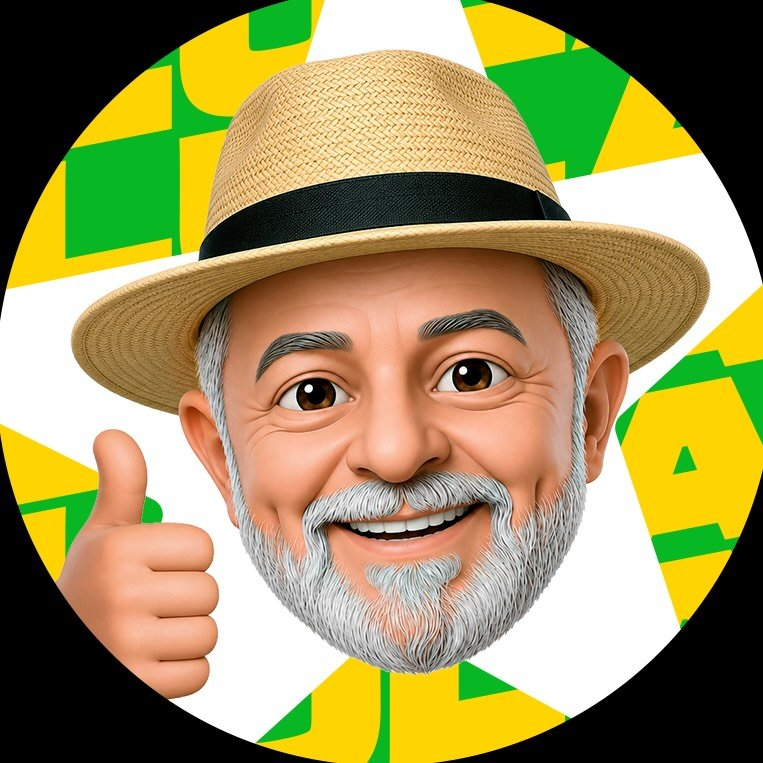
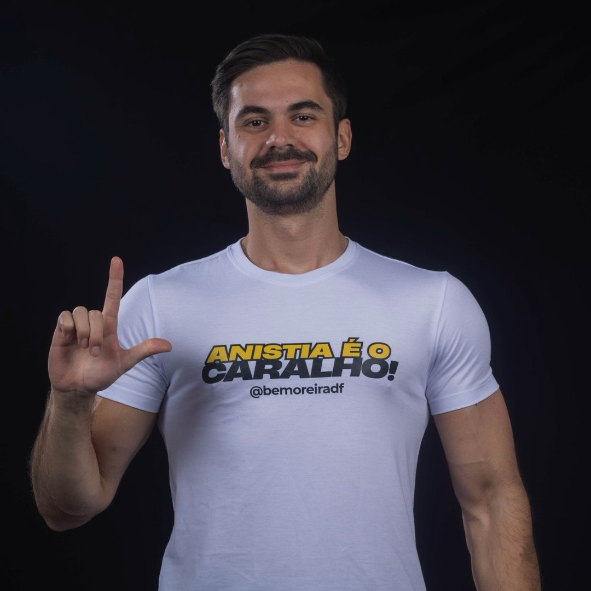
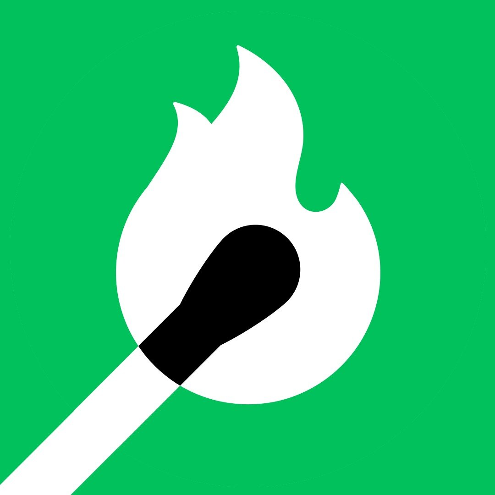

Canais de WhatsApp
3 canaisPerfis de Instagram
20 perfis
@brasilcomlulaVer perfil @eutocomlulaVer perfil @portavozdolulabrVer perfil @anaelisastVer perfil
@bemoreiradfVer perfil
@brasilforadacavernaVer perfil @esquerdaradical.brVer perfil @esquerdasexyoficialVer perfil @esquerdaverdeVer perfil @guilhermecortez_Ver perfil @hilton_erikaVer perfil @jairmearrependiVer perfil @janones.apoioVer perfil @jones.manoelVer perfil @jovenspelademocracia_Ver perfil @marinasilvaoficialVer perfil @pragmatismopoliticoVer perfil @samiabomfimVer perfil @sejasubversivoVer perfil @seremosresistenciaVer perfilCanais de YouTube
19 canais
Lula OficialVer canal
342 ArtesVer canal
André JanonesVer canal
Bebel EcologiaVer canal
CartaCapitalVer canal
Desce a Letra ShowVer canal
Desce a Letra Show CortesVer canal
Duda BolcheVer canal
Estúdio FluxoVer canal
Ian Neves — História PúblicaVer canal
Ian Neves OficialVer canal
Instituto Conhecimento LibertaVer canal
Papo de PretaVer canal
PedagolíticaVer canal
RevelandoVer canal
Revista FórumVer canal
SoberanaVer canal
Tecnologia e ClasseVer canal
The Intercept BrasilVer canal
Perfis de Bluesky
9 perfisComunidades do Reddit
5 comunidades
Nenhum resultado encontrado. Tente outra busca ou selecione outra
plataforma.